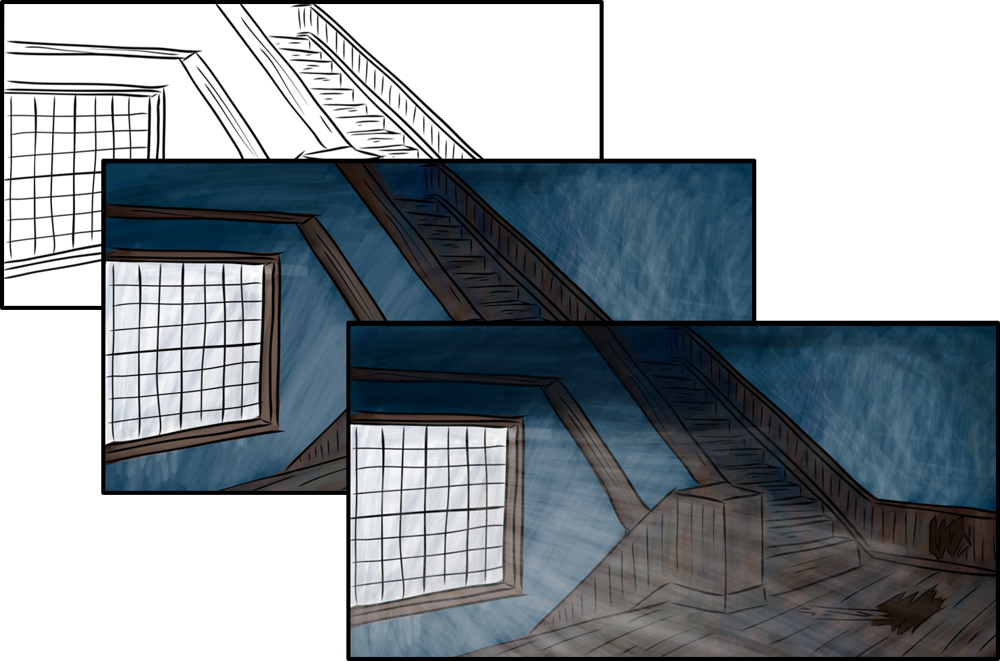
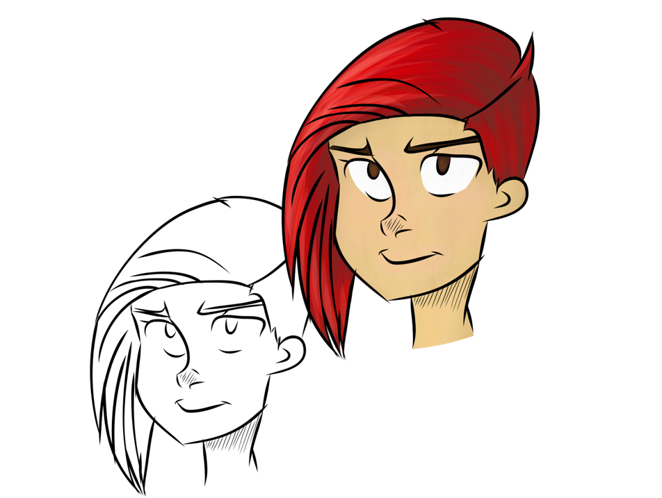
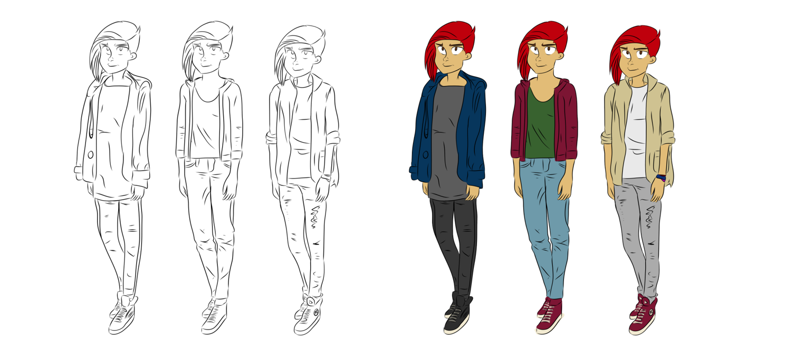
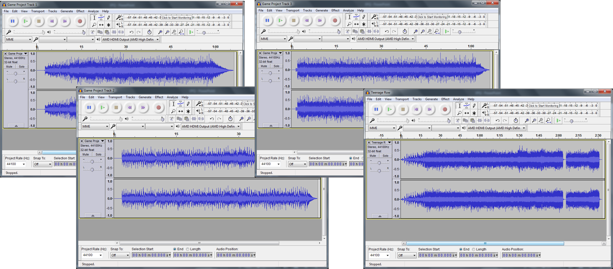
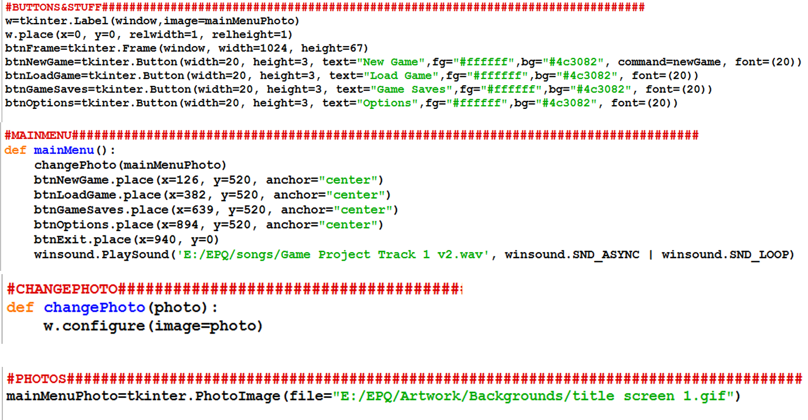
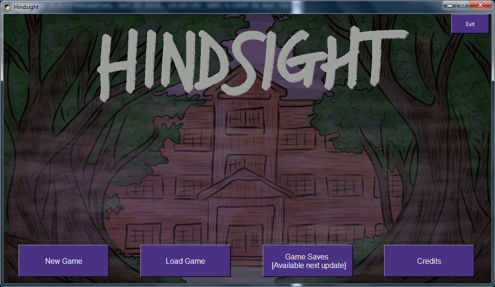

For my extended project at A-level, I created an alpha of a decision-based video game with multiple endings for Windows 10 devices. The plot is about a group of teenagers that get trapped in an abandoned building, they must deal with supernatural forces to escape. The player's decisions will affect the outcome of the game. This game was inspired by games like Life is Strange, Until Dawn and Undertale.
The game was programmed using Python with Tkinter. The artwork was created using Adobe Illustrator Draw. The music was designed by me and performed by a local band; it was then mixed in Audacity. Game development was from 20/05/16 to 17/11/16.

This image shows the development of one of the backgrounds for my game, it was based on the stairwell of my secondary school. The structure I followed when creating artwork was line-art, add colour, add lighting and shadows.

Before designing the characters' outfits, I designed the face. This allowed me to get a feel for the character and better gauge what clothing they would wear.

I would design 3 outfits and pick the best one.
I got into contact with the local band Symbient for help with creating the game music. They agreed to help me with the music and would bring all their gear to my house to record it. We created 3 soundtracks and I used the instrumental of one of their original songs ‘Teenage Row’ for the credits song. Audacity was used to record the music and save them as a .wav file type so my program was able to read them. We created songs for the main menu, the calmer moments of the game and the intense moments of the game. When we created the music, we made sure that it would sound okay when it was looped. The lead singer from the band Fire Lady Luck helped mix/record the music.

For my game to be able to use the music, I had to edit it to make sure it would sound okay when looped. I used audacity to crop the songs to start and end at the correct parts and then saved them as different versions in. I left the credit song as it was as that doesn't need to be looped.
To program my game, I used Python3.3 and Tkinter. Tkinter is a way to create a visual interface for Python and is very similar to Python 3.3’s language.


Full details of how I created this game are available here.
The alpha is available to play here.